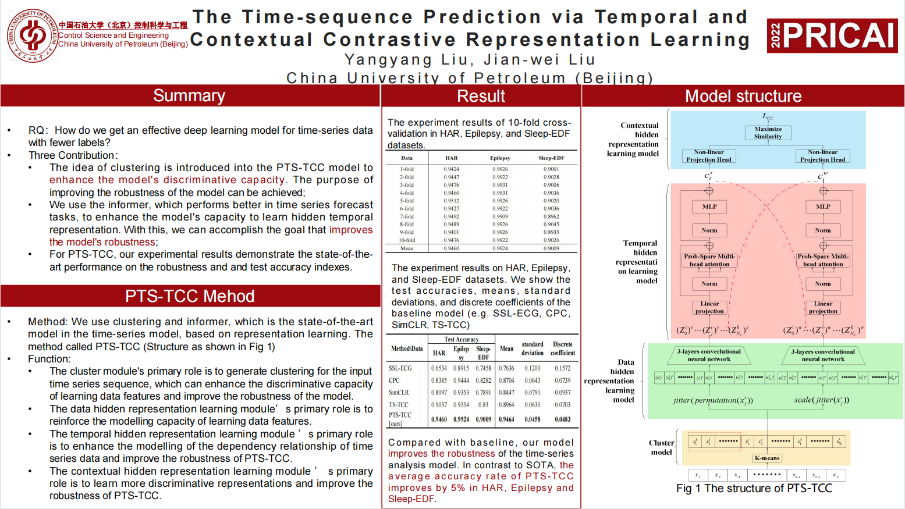
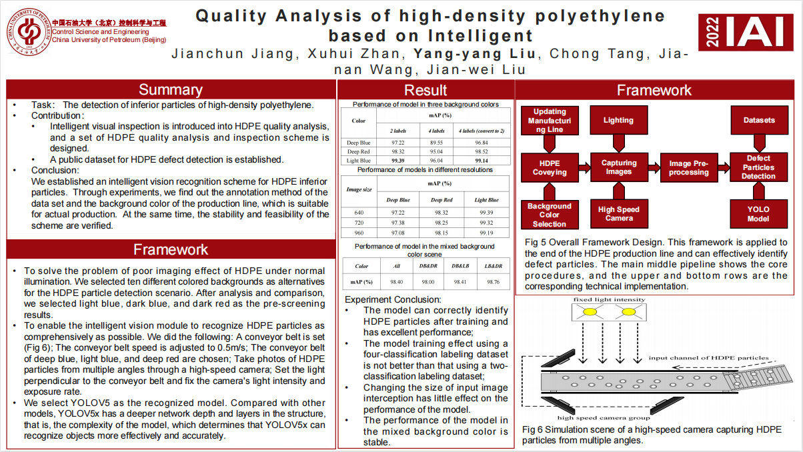
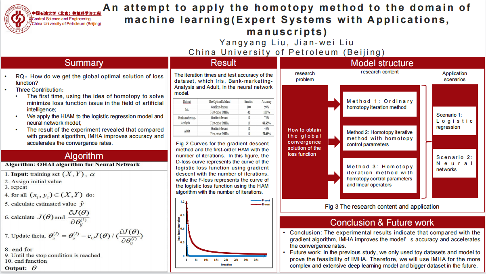
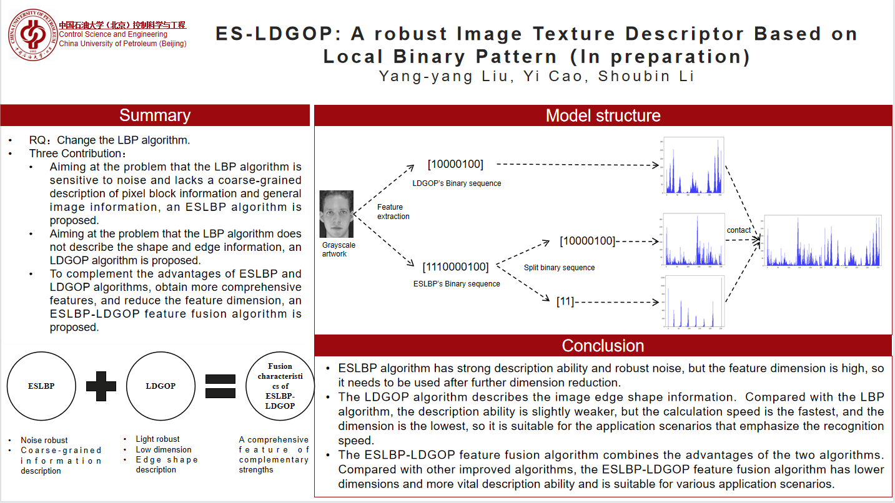

Yangyang Liu
Department of Automation |
 |
Biography
Currently I am a seconde-year M.Sc. student in the China University of Petroleum (Beijing).
Before that, I got my B.Sc. degree (ranked top 2 out of 60 students) in the China University of Petroleum (Beijing) in June 2020 fromChina University of Petroleum (Beijing). In the same year, I was admitted to study for a M.Sc degree in the China University of Petroleum (Beijing) without entrance examination.
My research interests include Graph neural networks, machine learning, contrast learning, Reinforcement learning.
Educations
|
|
M. S., China University of Petroleum (Beijing), changping, Beijing [2020.9 ~ 2023.6]
|
|
|
B. Sc, China University of Petroleum (Beijing), changping, Beijing [2016.9 ~ 2020.6]
|
Research [Google Scholar]
|  | The Time-sequence Prediction via Temporal and Contextual Contrastive Representation Learning. 19th Pacific Rim International Conference on Artificial Intelligence. Yang-yang Liu, Jian-wei Liu. PRICAI (accepted), 2022. |
|  | Quality Analysis of high-density polyethylene based on Intelligent. Jianchun Jiang, Xuhui Zhan, Yang-yang Liu, Chong Tang, Jia-nan Wang, Jian-wei Liu. IAI (accepted), 2022. |
|  | An attempt to apply the homotopy method to the domain of machine learning. Yang-yang Liu, Jian-wei Liu. Expert Systems with Applications (SCI, Q1),manuscripts . |
|  | ES-LDGOP: A robust Image Texture Descriptor Based on Local Binary Pattern. Yang-yang Liu, Yi Cao, Shoubin Li. In preparation. |
Patent
A deep learning-based detection and identification system and method for polyethylene particle defects. 2021. CN112837311A. National invention patent
Heald filament separation detection system and method based on self-learning mode. 2020. CN110865084A. National invention patent
A high-speed video acquisition and processing circuit structure. 2022. CN216249232U. National invention patent
Detection system and method of heald wire separation based on a self-learning model. 2020. CN110865084AU. National invention patent
A method for yarn anomaly detection and control of the automatic mechanizing machine. 2022. CN114120183A. National invention patent
Project
1/6/2021-1/10/2022, Research on the automatic extraction model of crucial information from petrochemical scientific literature, Algorithm engineer, Horizontal project of Institute of Software, Chinese Academy of Sciences
1/3/2021-1/6/2021, Knowledge extraction model, Member, Horizontal project of Institute of Software, Chinese Academy of Sciences
5/2018-5/2019, Intelligent electronic access control, Project Leader, University Student Science and Technology Innovation Project of China University of Petroleum (Beijing)